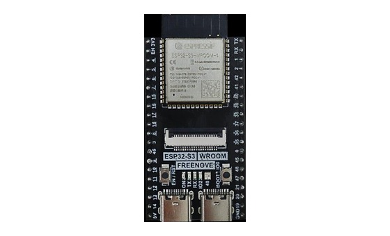
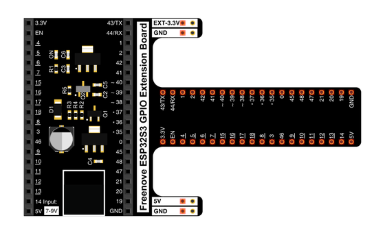
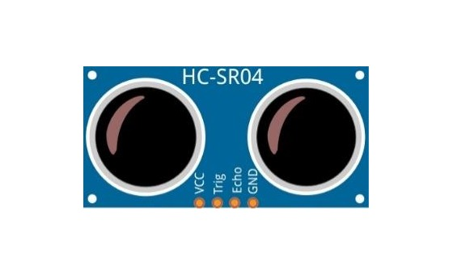
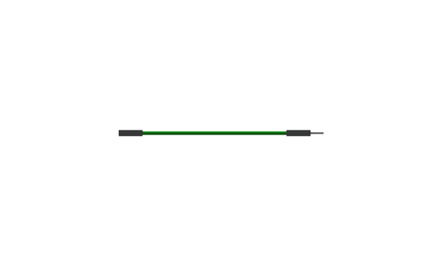
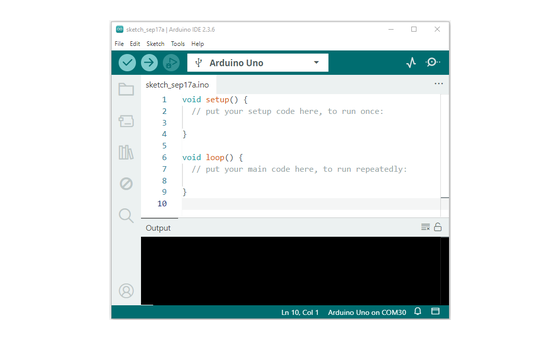
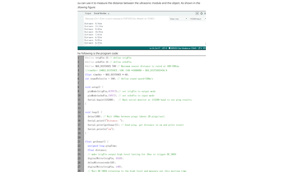

ESP32-S3 board
The brain that runs your uploaded sketch.
TinySkiff ESP32-S3 Lab · Day 26 of 30
Today you build a tiny depth sounder. The HC-SR04 sends a ping you can't hear, listens for the echo, and the ESP32-S3 times the round trip to work out how far away things are — the same trick a boat uses to read the water beneath it.
TSK-DAY26-ULTRASONIC
Hand this to an agent so it can pull the lesson packet and coach you step by step.
01 First, know the pieces
Six things, nothing more. Tap Define on any part you haven't met — the answer opens as a field note you can read and dismiss without losing your place.

The brain that runs your uploaded sketch.

Spreads the pins into rows you can reach and label.

The distance sensor with two round transducers.

Temporary, solder-free connections.

Uploads code and opens Serial Monitor.

Sketch_19.1_Ultrasonic_Ranging.ino
02 Make the physical circuit
The official Freenove diagram is your chart. Click it to enlarge. Each connection below tells you where the wire goes and why it's there — hover a row to light it up.
Check before power. Keep the sensor pins in the order printed on the module — VCC, Trig, Echo, GND — and unplug USB before you move any wire.
03 One action at a time
This is the main path — you can finish the day without opening a single field note. Tap each step as you go to keep your place.
Place the HC-SR04 so the two round transducers face outward, away from loose wires.
Connect VCC → 5V, Trig → GPIO 13, Echo → GPIO 14, and GND → GND.
Pause and compare your wiring to the chart before powering or uploading.
Open Sketch_19.1_Ultrasonic_Ranging.ino in Arduino IDE.
Upload the sketch to the ESP32-S3.
Open Serial Monitor and set the baud rate to 115200.
Hold a flat object 10–30 cm in front of the sensor and move it slowly closer and farther.
04 Read just enough code
You don't need the whole sketch today — just four lines that do the real work. Switch to MicroPython if you'd rather see the same idea in Python; the wiring never changes.
#define trigPin 13
#define echoPin 14
pingTime = pulseIn(echoPin, HIGH, timeOut);
distance = (float)pingTime * soundVelocity / 2 / 10000;#define trigPin 13Names GPIO 13 trigPin so the rest of the sketch reads plainly. pulseIn(echoPin, HIGH, timeOut)Times how long Echo stays HIGH — that's the raw measurement. … / 2 / 10000Sound goes out and back, so halve it; the / 10000 just lands the answer in centimetres. Optional side path · same circuit
trigPin = Pin(13, Pin.OUT, 0)
echoPin = Pin(14, Pin.IN, 0)Pin(13, Pin.OUT, 0)Sets GPIO 13 as the trigger output — the board's side of the ping.Pin(14, Pin.IN, 0)Sets GPIO 14 as the echo input — where the return pulse arrives.Same pins, same behaviour. Run it in Thonny and compare the printed distance with the Arduino version. If MicroPython isn't set up yet, skip this — it should never block the Arduino-first day.
05 Understand, don't memorise
The whole day is one loop, running many times a second. It's the same idea as counting the seconds between lightning and thunder.
Trig tells the sensor to emit a short pulse above human hearing.
The pulse hits an object and some of it returns.
Echo stays HIGH for exactly the round-trip time.
Time × speed of sound gives how far the pulse travelled.
distance = speed of sound × echo time ÷ 2
Real sensors react to object shape, angle, movement, and air. A little wobble is normal — watch the trend, not one number.
Flat objects bounce more sound straight back. Curved or soft ones scatter it, so the echo gets weaker.
06 Know it worked
Success and recovery sit side by side, so you never have to go hunting when something looks off.
A good reading changes when you move the object. Small wobble is fine.
07 Make the idea yours
Same working setup, one new skill: turning a measurement into a judgement. It fits inside today's 30 minutes.
A book, a wall, and one object you pick. Note the expected distance, the reading, and anything odd.
Pick a "too close" distance — say 15 cm. Later that line can become a beep or a warning.
Logbook
08 Learn it with a hand on the tiller
Every lesson ships with a code and a machine-readable packet, so an agent can guide you with full context.
TSK-DAY26-ULTRASONIC
How the agent should behave: guide one physical step at a time, wait for you to confirm, explain terms on request, and always check wiring, board, port, and USB before changing code.